Two platforms. Zero confusion. 40% faster onboarding.
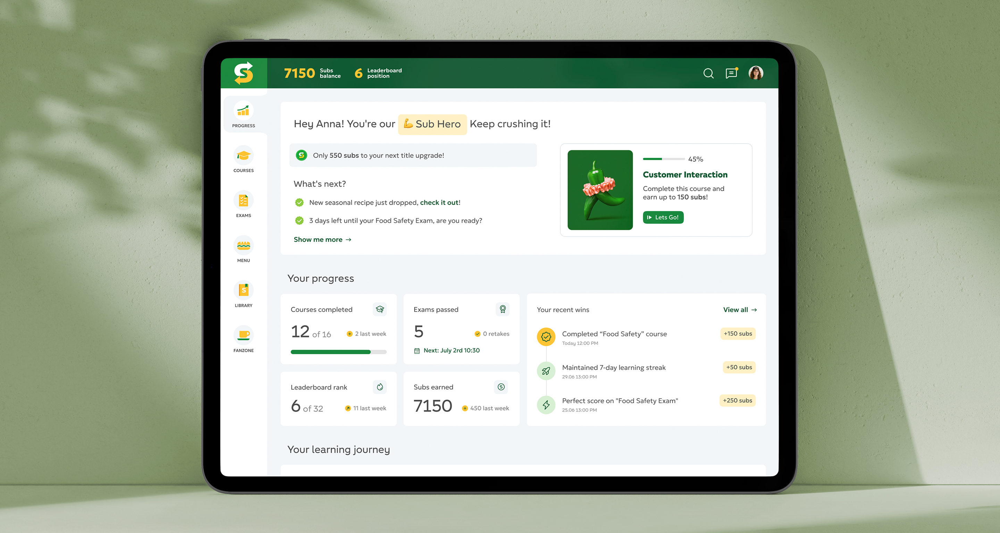
I designed Subway Russia's first digital platforms: one to train employees and another to support franchise owners.
They transformed scattered manuals into structured, step-by-step digital flows that helped users move from "Where do I start?" to feeling confident on the job from day one.

Overview
Subway Russia needed to modernize how over 6,000 employees and hundreds of franchise owners learned, onboarded, and operated their stores, ensuring every location could follow the same clear standards instead of relying on outdated offline processes.
Overview
The existing approach wasn't digital: it relied on thick manuals, scattered PDFs, and in-person sessions. It was inconsistent, impossible to track, and costly, leading to repeated failures, high turnover, and delayed launches.
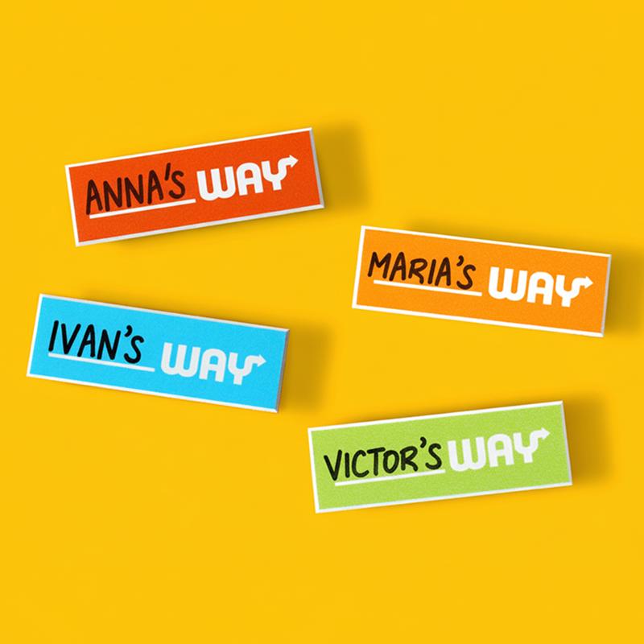
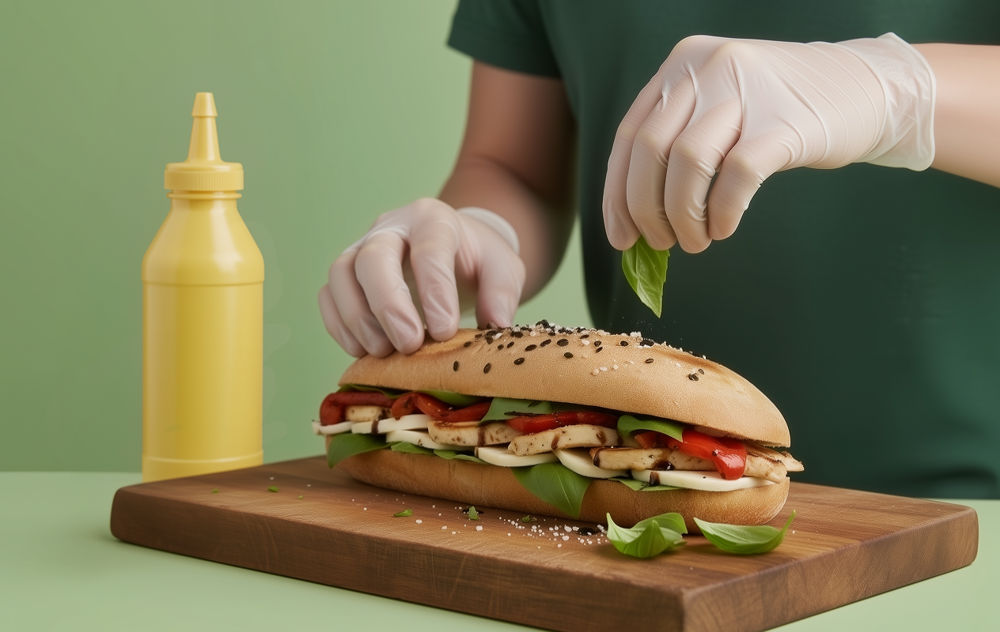
I created two connected platforms, giving 400+ Subway restaurants a simple hub for all training, resources, and progress tracking, accessible from any device.
The Challenge
No system, high stakes. Employees, often in their first jobs, needed quick, motivating lessons to perform effectively from day one. Franchise owners, investing in new businesses, needed structure, reliable resources, and clear guidance to avoid costly mistakes when opening and running their stores.
Two audiences, very different needs. Balancing trust, clarity, and motivation for two very different journeys became the core design challenge.
Balancing trust, clarity, and motivation, for two very different journeys, that was the real design challenge.
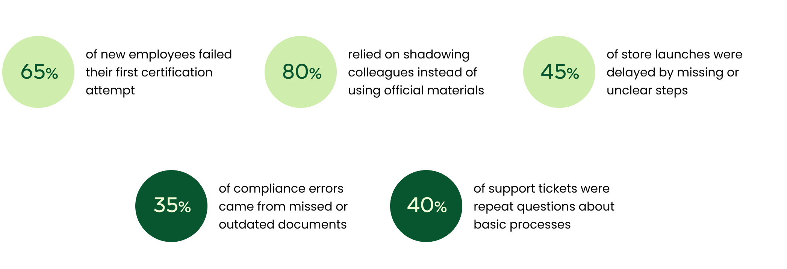
My Part in This
I led the design from start to finish, shaping the vision, running research, and making sure we didn't just ship another tool, but a system franchisees and employees could truly rely on every day.
I collaborated with training and methodology experts to translate scattered content into a clear system, worked with PMs and developers to shape strategy and refine flows, and presented decisions to stakeholders.
I interviewed employees and franchisees to uncover gaps in training, confidence, and daily workflows. This shaped where digital tools could add real value.
I partnered with Subway's trainers and methodology experts to transform offline manuals and ad-hoc materials into structured, digestible content people could actually follow.
I created flows, wireframes, and a design system that worked across mobile and desktop, keeping usability simple for non-tech-savvy employees.
I built prototypes, tested them with internal users, and iterated to ensure the tools were intuitive and motivating.
I worked closely with PMs, developers, and the digital director to align platform strategy, refine flows, and present design decisions to stakeholders.
Research & Discovery
This project began with in-depth research across employees, franchisees, and internal teams to understand how onboarding and daily operations really worked in practice, and why they often broke down.
I didn't just collect pain points. I wanted to see how people actually learned, how franchisees tried to pass knowledge down, and what would make both groups feel supported instead of overwhelmed.
Interviewed staff across different stores to see how they used current training, what confused them, and what helped.
Joined a few in-person classes, which revealed how outdated and chaotic the process felt.
Reviewed onboarding decks and materials to spot gaps, unclear steps, and mismatches with operations.
Spoke with owners to map their onboarding journey, understand the lack of structure, and see how they passed knowledge to staff without a central system.
Staff had to memorize too much at once, while managers rarely had time for one-on-one support.
Content lived in scattered PDFs, decks, videos, and emails, leaving people to guess which version was "correct."
Owners juggled calls, brochures, and emails, often unsure of the right steps to launch or run a store.
Some users were comfortable with digital tools, others were intimidated by anything beyond WhatsApp.
Materials didn't match the pace of running a store, making it hard to apply theory on the floor.
Understanding the Users
Understanding users wasn't just research, it was about stepping into their shoes and feeling their daily struggles. Employees were often teenagers in their first jobs, nervous and unsure, while franchise owners carried the weight of running an entire business.
My role was to turn these emotions into design: anxiety became progress indicators, lack of time became quick access, and scattered knowledge became one source of truth. Every feature mapped directly to a human frustration.
Instead of building skills, the process crushed motivation. New hires got lost in confusing materials, failed tests, and repeated mistakes, while managers kept reteaching the same basics. Hours were lost, turnover rose, and stores paid the price in productivity and profit.
Training was a patchwork of scattered PDFs, printouts, and random videos. Employees didn't know how or when to use them, so training became improvised and inconsistent across stores. Mistakes weren't the exception, they were baked into the process.
With no proper system, knowledge spread informally. New staff shadowed older colleagues, picking up skipped steps and bad habits. Errors multiplied, costing the business wasted hours and inconsistent quality.
Instead of driving the business forward, senior staff spent hours re-explaining routine tasks. Valuable time that could fuel growth was lost to re-teaching.
Many employees failed tests multiple times, not from lack of ability, but from overwhelming and poorly structured materials. Each failure chipped away at confidence and motivation.
For many, Subway was their first job. Fear of failure and lack of confidence made them hesitant to ask for help, slowing onboarding even more.
In smaller towns, weak internet, outdated devices, and low digital literacy made learning harder. The system had to work for everyone, not just the tech-savvy.
Without a digital platform, managers had no clear view of who was trained, who was struggling, or where mistakes occurred. Problems surfaced only after they hurt the business.
Franchisees described the journey as confusing, stressful, and lonely. Steps weren't clear, updates got buried, and constant calls to HQ slowed launches, increased risks, and cost revenue on both sides.
Franchisees juggled binders, emails, and calls to HQ. Marketing rules, compliance docs, and training materials were scattered everywhere. Important updates often got buried, leading to compliance mistakes and exposing stores to risk.
Opening a store was a maze of unclear steps with no way to track progress. Each new franchisee pieced it together differently, causing delays, last-minute surprises, and costly errors. Launches dragged by weeks, directly cutting into revenue for both owners and HQ.
Every missing detail turned into another phone call. HQ was swamped with repetitive requests, while owners felt unable to move forward independently.
Even when materials existed, they were dense and hard to apply. New owners didn't know what was essential and what was "nice to know." Many defaulted to outdated promotions or improvised materials, which hurt customer experience and weakened brand trust.
For many owners, the process felt lonely and stressful. Without clear guidance, they were never sure if they were "doing it right." That uncertainty created frustration on both sides and strained relationships with HQ.
HQ carried the weight of broken processes every day. Teams spent hours answering repeat questions and resending documents instead of focusing on growth. Valuable time and resources drained into support, making scaling slower and more expensive.
HQ spent hours answering the same questions from dozens of stores daily. Strategic work was sidelined by repetitive support.
Without insight into franchisee training, HQ only discovered gaps later, as compliance failures, inconsistent operations, or customer complaints.
Scattered materials meant stores applied rules differently. Customers noticed, weakening trust in the brand.
Each new store required hands-on support from HQ. What should have been a repeatable process became a one-off struggle, making expansion slower, more expensive, and harder to sustain.
"Before research, we saw 'employees' and 'franchisees' as abstract groups. After Olga's work, they became real people with voices and needs we couldn't ignore."

Clear Learning Journey
Clear Learning Journey
I created a guided dashboard that replaces guesswork with clarity, showing progress, upcoming exams, and next steps in one place. Employees no longer waste time searching or waiting for managers to explain what to do.
The courses page works as a structured learning map with visual cards, short lessons, and quick quizzes. Each module turned overwhelming manuals into steady progress and visible confidence.
A clear dashboard made next steps obvious and reduced uncertainty from day one.
Learning modules turned large manuals into short, achievable steps.
Assessments and progress indicators helped users improve continuously.
Every screen reduced friction and reinforced that progress was possible.
Reusable UI patterns kept the experience consistent across learning flows.
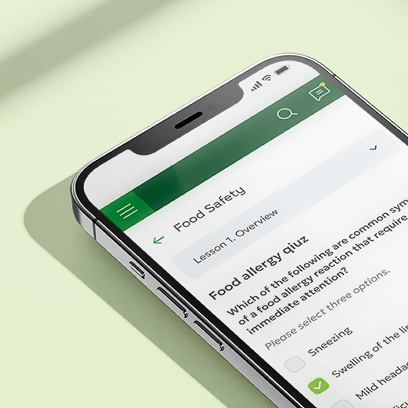
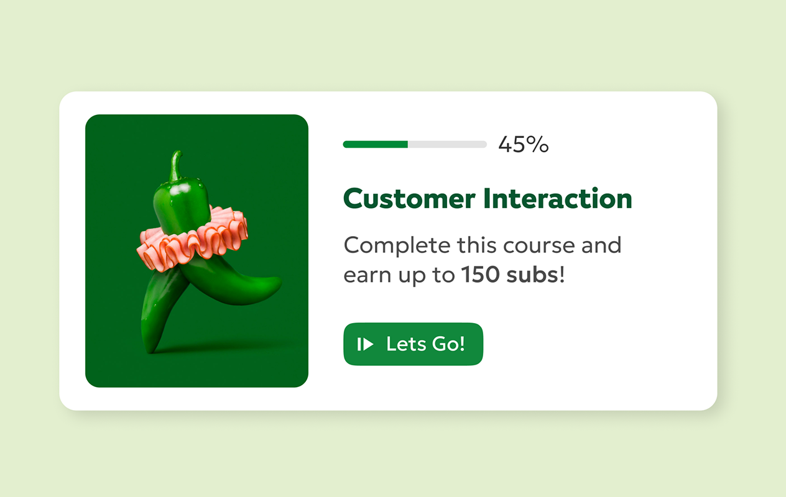
Clear dashboards and step-by-step courses transformed scattered materials into a simple journey where progress is visible and learning feels achievable.
Motivation & Gamification
Motivation & Gamification
I added a motivation layer to keep training engaging. Instead of another chore, it became something people wanted to complete: with "Sub" points to collect, milestone badges to unlock, and progress worth celebrating.
Exams no longer felt overwhelming with quick retakes and instant feedback. Leaderboards introduced friendly competition between stores and regions, making learning more playful and social.
Progress linked to visible rewards made completion feel worthwhile.
Quick retakes and instant feedback reduced fear and kept momentum high.
Leaderboards encouraged engagement across teams and regions.
Milestones helped users perceive progress as achievable and motivating.
Friendly visuals made training feel less like a chore and more like progress.
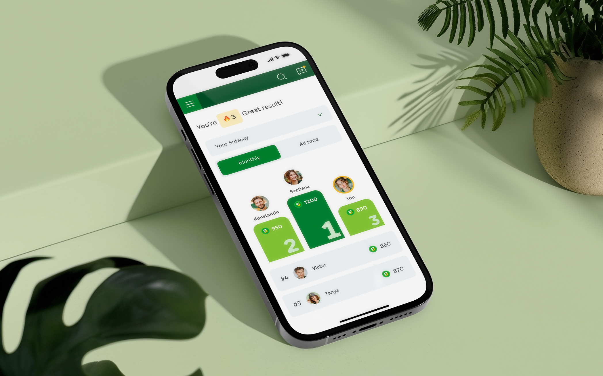
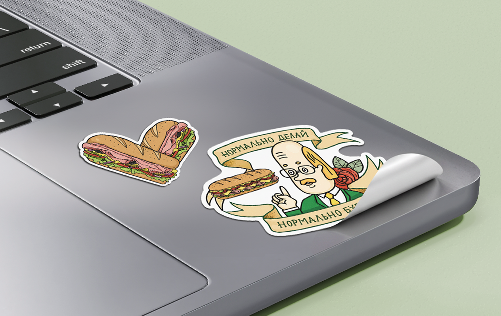
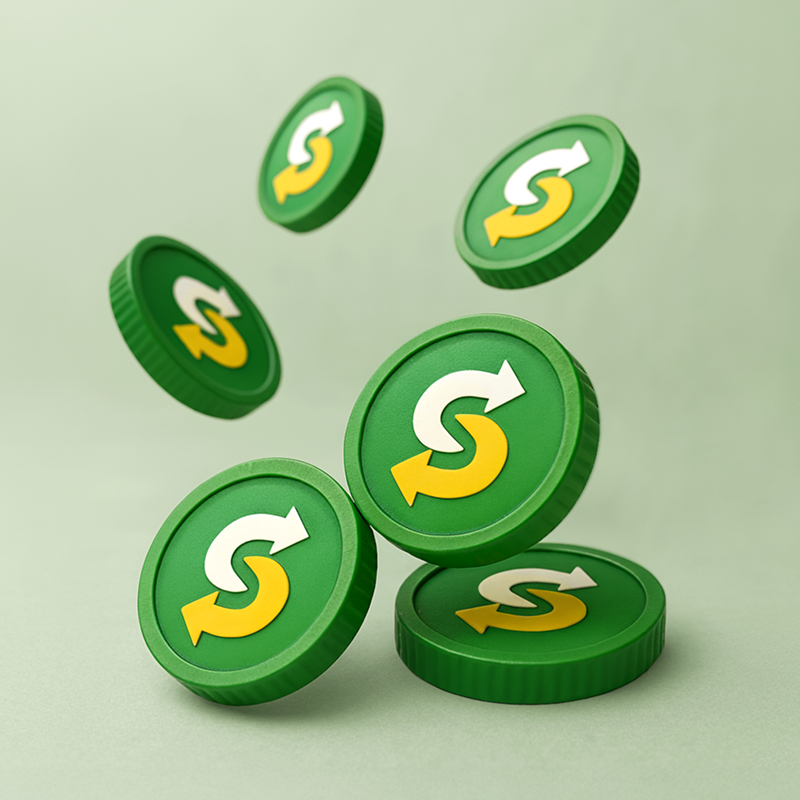
When progress feels visible and rewarded, people keep going. Gamification made learning simple, engaging, and satisfying to complete.

Operational Clarity
Operational Clarity
Without the system, opening a new store felt like solving a puzzle without the picture. Instructions were buried in scattered PDFs, long email chains, and phone calls to HQ. Franchisees lost weeks chasing answers and never felt sure what step came next.
The platform became a single source of truth with a comprehensive knowledge base, practical courses, and live webinars all in one place. Franchisees could finally find answers without calling HQ and move through openings with confidence.
Consolidated resources and guidance in one platform.
Clear flows reduced uncertainty across store opening and operations.
Courses and webinars turned policy into actionable daily practice.
Better self-service meant fewer calls to HQ and faster decisions.
"The portal guided me step by step through opening my store — every answer I needed was right there."
One Brand, One Standard
One Brand, One Standard
Each store once interpreted brand standards differently. Marketing materials, training quality, and compliance varied from region to region, leading to a fragmented customer experience.
The platform ensured every franchisee had access to the same guidelines, campaigns, and training. Standards were unified, so no matter the location, customers experienced the same brand quality and service.
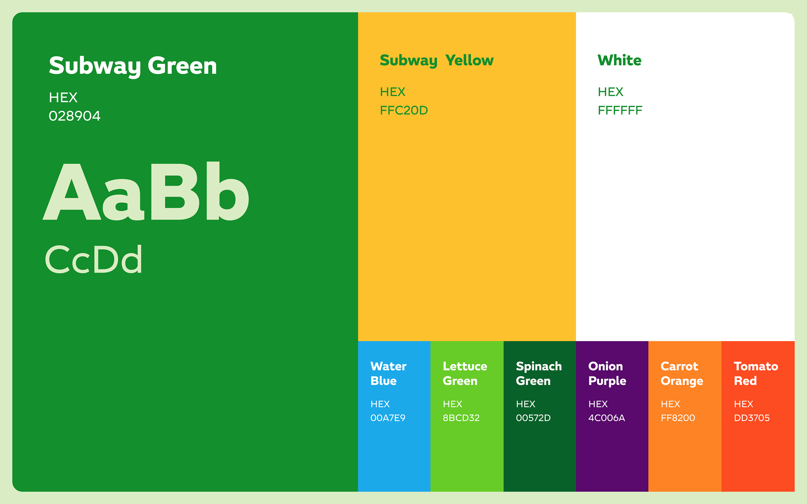

Results for Employees:
From Overload to Confidence
Results for Employees:
From Overload to Confidence
Before, onboarding dragged on for weeks, with managers repeating the same explanations and new hires left guessing. With the new platform, learning became self-paced and structured — employees could move quickly through lessons and arrive on shift prepared.
Onboarding time dropped by 40%, and successful certification rates rose by over 60%. Progress tracking built confidence, overall training costs fell by a third. Managers no longer had to repeat basics, saving hours each week.
Training time dropped by ~40%, letting employees get onto the floor weeks sooner and reducing lost productivity.
Pass rates rose by 60%, cutting down re-tests and boosting overall training efficiency.
Digital certification reduced expenses by a third, replacing repetitive manual checks.
Freed up hours each week as managers no longer had to reteach basics, focusing instead on coaching and performance.
Standardized onboarding ensured every store followed the same playbook, reducing costly errors.
Clear progress tracking gave new hires visible milestones, lowering anxiety and turnover risk.
Gamified features like badges and leaderboards turned training from a chore into a motivator.
A digital platform that worked across devices and regions, allowing Subway to train thousands without extra effort.
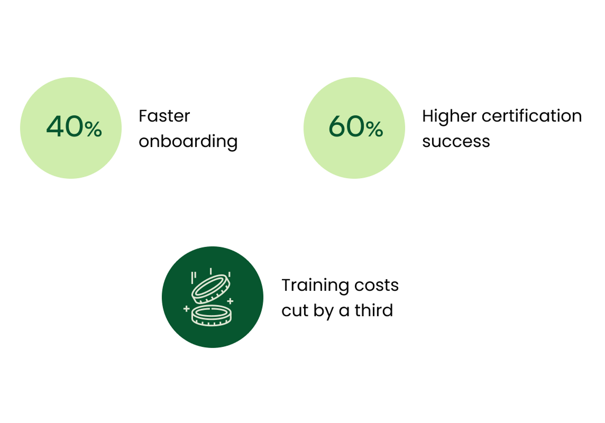
Results for HQ and Franchisees:
From Uncertainty to Control
Results for HQ and Franchisees:
From Uncertainty to Control
With all resources in one place, franchisees could finally stop chasing scattered answers and focus on running their business. Store launches became up to 30% faster, and everyday operations felt smoother and more predictable.
At the same time, HQ saw support requests drop by 40%, saving hundreds of hours. Instead of fielding repetitive questions, teams could focus on higher-value work like marketing, growth programs, and supporting more franchisees at scale.
Replaced scattered PDFs, emails, and outdated files with a single hub where everything was always up to date.
Gave owners a clear roadmap for opening and running stores, making launches smoother and more predictable.
Webinars and online courses replaced one-off phone calls, helping owners stay aligned with brand updates.
Most answers became self-service, reducing back-and-forth calls and giving owners more control.
Ensured every new store opened with the same level of quality and compliance, no matter the region.
Repetitive questions dropped as franchisees found answers in the portal, freeing HQ staff for strategic work.
HQ could track progress across stores, spotting gaps before they became compliance issues.
Standardized resources meant stores applied rules consistently, protecting brand trust.
New store openings became repeatable instead of one-off struggles, making expansion faster and more sustainable.
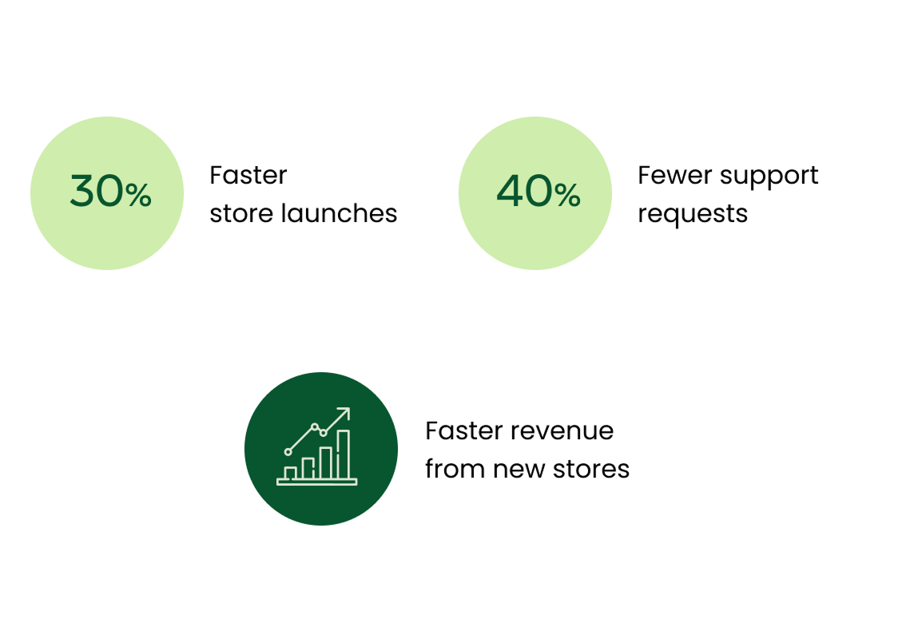
Reflections & Learnings
Reflections & Learnings
I’ve always believed design is about helping people. Not in an abstract sense, but in the small, everyday ways that make work less frustrating and more meaningful. For me, the best projects are the ones where I can take away friction, make someone’s job easier, or give them the confidence to grow.
Subway showed me that design goes deeper than tasks and screens — it shapes trust, motivation, and culture. Supporting employees while giving franchisees confidence wasn’t just a design challenge, it reminded me why I love this work: to make jobs easier and workplaces stronger.
Frontline employees had very different needs from HQ managers. Seeing their daily struggles taught me to design beyond "personas" and focus on lived experience.
A usable tool isn't enough if people don't feel encouraged to use it. Leaderboards, streaks, and small wins showed me how design can shape behavior and keep people engaged.
Onboarding looked like "just training modules," but making them clear, consistent, and motivating across hundreds of stores was a complex puzzle - and a rewarding one.
This project wouldn't work without aligning content, training, and development. I learned how to translate business language into design decisions everyone could rally around.
By reducing confusion and supporting trust between employees and HQ, design played a role in how people felt about their jobs. That's the kind of impact I want to keep creating.

Helping others feel confident turned out to be the most rewarding part.